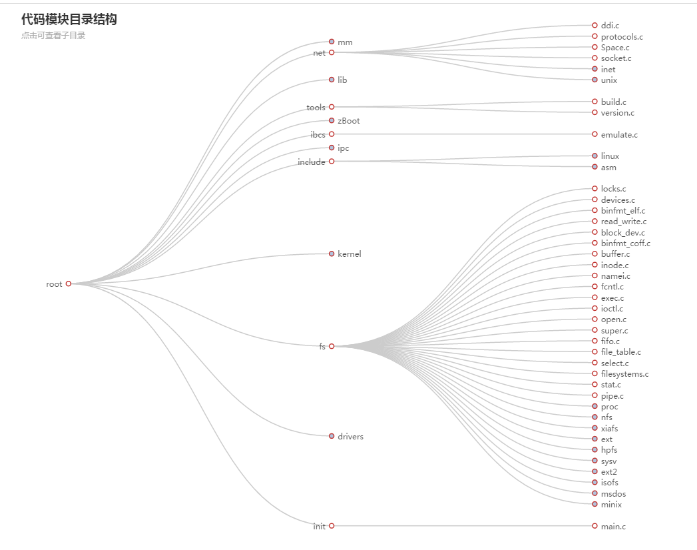

ECharts是一个由百度开发的纯 Javascript 的图表库，pyecharts是某三位大佬将ECharts移植到Python项目中的产物，在Python网站中可以更轻松的接入图表，但是个人感觉pyecharts比ECharts还是局限很大的，pyecharts0.5.x版本就更为缩水了，由于项目之前用的是pyecharts0.5.11版本，图表比较少，不足以解决问题，甚至自己用js实现了两个图表来使用，美观度比ECharts还是逊色不少，如果将项目迁移到新版pyecharts v1.0.0则更为麻烦，就直接在原来的项目中引入echarts库来混合使用，pyecharts v1.0.0虽然完善了不少问题，但是加入了新的配置规则，学习起来增加了不少负担，灵活度也没有echarts好，个人建议如果项目中使用的图表不是很复杂，数据静态的可以使用pyecharts，复杂点的还是尽量使用echarts比较方便，下面开始进入主题：
1. 安装pyecharts：
pip install pyecharts==0.5.11 #0.5.x的旧版，我目前使用的这个，要用pyecharts的话建议安装下面的最新版
pip install pyecharts #安装最新版
pyecharts使用图表可以直接在视图代码里面构建图表，Django会将其渲染到前端模板页面中：
# 主体图-1
def visualPage(request):
template = loader.get_template('visualModule/visualPage.html') #载入模板文件
parseArgData()
data3D1,weights3D1,bar = drawBar() #得到图表数据
context = dict( #context添加在模板中要渲染的数据
myechart = bar.render_embed(), #图表数据
host = DEFAULT_HOST,
script_list = bar.get_js_dependencies(), #由pyecharts引入需要用到的js代码文件
guestSetArgs=startArgsSet,
warningdata=argList,
data3D=data3D1,
weights3D=weights3D1,
)
return HttpResponse(template.render(context, request))#
构建图表函数，这里只粘贴了图表的接口代码，数据处理和逻辑代码略去：
def drawBar(): #绘制
x_axis = ['','','','','','','','','','','',''] #X轴
y_axis = [0,1,2,3,4,5,6,7,8,9,10,11]
data = [
#闭源5个
dict(
name = "",
value=[so[0], sor[0], projects[0][0][""]],
itemStyle=dict(color=getColorstr2(0,weights[0]))
),
dict(
name="",
value=[so[4], sor4[2], projects[4][2][""]],
itemStyle=dict(color=getColorstr2(4,weights[18]))
),
...
]
bar3d = Bar3D("", width=1000, height=500)
bar3d.add("",x_axis,y_axis, data,
is_visualmap=False,
is_xaxis_show=True,
is_yaxis_show=False,
is_splitline_show=False,
xaxis3d_name =' ',
yaxis3d_name =' ',
#is_label_show =True,
mark_point_symbol='circle',
is_more_utils=True,
mark_point=['max','min'],
mark_line=['average'],
zaxis3d_name ='评分',
xaxis3d_interval =0,
grid3d_width=150, grid3d_depth=100,
grid3d_shading='realistic',
is_grid3d_ratate = True,
grid3d_rotate_speed=180,
tooltip_formatter=formatter)
bar3d.on(MOUSE_CLICK, on_click)
return data,weights,bar3d<!-- 模板代码-->
<div>
{{ myechart|safe }}
<br>
{{radarChart|safe}}
</div> 这样就可以在前端显示柱状图图表了
另外项目中还使用了一个折线图也是同样做法：
其他图表也是类似添加，可以参考pyecharts官网教程：
https://pyecharts.org/#/
2. 接下来在项目中再引入echarts来使用，和pyecharts混合使用互不影响
安装可参考echarts官网：
https://www.echartsjs.com/zh/
去https://github.com/apache/incubator-echarts下载echarts源码包，解压出来的文件夹里的 dist 目录里可以找到最新版本的 echarts 库，直接在前端页面中引入即可使用echarts图表，
1 {% for jsfile_name in script_list %}
2 <script src="{{ host }}/{{ jsfile_name }}.js"></script>
3 {% endfor %}
4
5 <script src="{% static 'js/dist/echarts.min.js' %}"></script>
6 <script src="{% static 'js/dist/echarts-gl.js' %}"></script> <div id="container3" style="height: 800px"></div>
<script type="text/javascript">
//echarts柱状图
var dom3 = document.getElementById("container3");
var myChart3 = echarts.init(dom3);
var app = {};
option = null;
var hours = [];
var days = [];
$.get("{% static 'json/eachBar3dData.json' %}",function (json_data) {
var jdata=[];
$(json_data.items).each(function(i,ite){
jdata.push(ite)
})
rectSize=Math.sqrt(json_data.length);
for(var i=0;i<rectSize;i++)
{
hours.push('');
days.push('');
}
option = {
title: {
text: '所有代码子模块代码数量3D柱状图',
subtext: '可显示代码数量，缺陷情况',
left: 'leafDepth'
},
tooltip: {
formatter:function(params)
{
var errors=0;
for(var i =0;i< json_data.length;i++)
{
if (json_data[i][3]==params.name)
{
errors=json_data[i][4];
break;
}
}
return "<div >"+"文件路径："+params.name+'<br>'+
"代码行数："+params.value[2]+'<br>'+
"缺陷数量："+errors+
"</div>";
},
},
visualMap: {
max: 4000,
inRange: {
color: ['#313695', '#4575b4', '#74add1', '#abd9e9', '#e0f3f8', '#ffffbf', '#fee090', '#fdae61', '#f46d43', '#d73027', '#a50026']
}
},
xAxis3D: {
type: 'category',
data: hours,
name: ''
},
yAxis3D: {
type: 'category',
data: days,
name:''
},
zAxis3D: {
type: 'value',
name:'代码数量'
},
grid3D: {
boxWidth: 200,
boxDepth: 180,
viewControl: {
// projection: 'orthographic'
},
light: {
main: {
intensity: 1.2,
shadow: true
},
ambient: {
intensity: 0.3
}
}
},
/* dataset: {
dimensions: [
'Income',
'Life Expectancy',
'Population',
'Country',
{name: 'Year', type: 'ordinal'}
],
source: json_data
},
*/
series: [{
type: 'bar3D',
data: json_data.map(function (item) {
return {
name:item[3],
value: [item[1], item[0], item[2]],
}
}),
shading: 'lambert',
label: {
textStyle: {
fontSize: 16,
borderWidth: 0
}
},
emphasis: {
label: {
textStyle: {
fontSize: 20,
color: '#900'
}
},
itemStyle: {
color: '#900'
}
}
}]
};
myChart3.setOption(option, true);
});
if (option && typeof option === "object") {
myChart3.setOption(option, true);
}
</script>
</div> 显示效果：
另外项目中还用到树形图表用来表示文件目录结构：

可钻入的矩形树图：
由于pyecharts0.5.x中不存在这个图表，pyecharts v1.0.0和echarts中没有添加还是我没有认真看也没有发现这个，就自己实现了和这个类似的钻入树形图表：
同时为了练手也自己实现了一个条形图表：
图形条数和形状是根据数据变化来做适应的，但是美观度比echarts还是逊色不少
3 . echarts事件交互的使用
项目中使用到一个雷达图，需要鼠标点击便签进入便签的子图，也是一个类似的钻入图形，逻辑代码部分较多，省略了getOption( argName)函数中的部分逻辑代码：
<div id="container" style="height: 800px"></div>
<script type="text/javascript">
var dom = document.getElementById("container");
var myChart = echarts.init(dom);
var app = {};
var weight=1000; //权重的倍数
var weight1=800;
function getOption( argName){
var ardData=[];
if(argName=="闭源特性"){ //判断点击文字
var weightBuf= [{{weights3D.0}},{{weights3D.1}},{{weights3D.2}},{{weights3D.3}},{{weights3D.4}},
];
var weightBuf1=[];
weightBuf.forEach(myFunction);
function myFunction(value, index, array) {
weightBuf1.push(value*weight1);
}
ardData=[
{
value : [{{data3D.0.value.2}},{{data3D.1.value.2}},{{data3D.2.value.2}},{{data3D.3.value.2}},{{data3D.4.value.2}},
],
name : '评分'
},
{
value : weightBuf1,
name : '权重'
}
];
option = null;
option = {
title: {
text: '雷达图',
subtext: '点击文字要素返回顶层属性雷达图',
},
tooltip: {
formatter:function(params)
{
namelist=['正确性', '可靠性', '安全性', '可理解性','代码熵']
var eachli=params.value;
if (params.name=='权重')
eachli=weightBuf;
return "<div >"+params.name+'<br>'+
namelist[0]+'：'+eachli[0]+'<br>'+
namelist[1]+'：'+eachli[1]+'<br>'+
namelist[2]+'：'+eachli[2]+'<br>'+
namelist[3]+'：'+eachli[3]+'<br>'+
namelist[4]+'：'+eachli[4]+
"</div>";
},
},
legend: {
data: ['评分（scole）', '权重（weight）']
},
radar: {
// shape: 'circle',
name: {
textStyle: {
color: '#000',
backgroundColor: '#dee',
borderRadius: 3,
padding: [3, 5]
}
},
indicator: [
{ name: '正确性', max: 100},
{ name: '可靠性', max: 100},
{ name: '安全性', max: 100},
{ name: '可理解性', max: 100},
{ name: '代码熵', max: 100},
],
triggerEvent:true
},
series: [{
name: '评分 vs 权重',
type: 'radar',
// areaStyle: {normal: {}},
data : ardData
}]
};;
}
return option;
}
option=getOption("root");
if (option && typeof option === "object") {
myChart.setOption(option, true);
myChart.on('click', function (params) {
console.log(params);
// alert(params.name);
myChart.setOption(getOption(params.name), true);
});
}
</script>
主要是用
myChart.on('click', function (params) {
console.log(params);
// alert(params.name);
myChart.setOption(getOption(params.name), true);
});
来监听鼠标点击标签事件，然后通过getOption来动态构建option显示，就达到了钻入效果点击之后的钻入效果
4. 自定义tooltip标签
在tooltip中定义formatter，params参数为当前活动的元素数据
tooltip: {
formatter:function(params)
{
var errors=0;
for(var i =0;i< json_data.length;i++)
{
if (json_data[i][3]==params.name)
{
errors=json_data[i][4];
break;
}
}
return "<div >"+"文件路径："+params.name+'<br>'+
"代码行数："+params.value[2]+'<br>'+
"缺陷数量："+errors+
"</div>";
},
},效果：
提示框浮层内容格式器，支持字符串模板和回调函数两种形式。
1, 字符串模板
模板变量有 {a}, {b}，{c}，{d}，{e}，分别表示系列名，数据名，数据值等。 在 trigger 为 'axis' 的时候，会有多个系列的数据，此时可以通过 {a0}, {a1}, {a2} 这种后面加索引的方式表示系列的索引。 不同图表类型下的 {a}，{b}，{c}，{d} 含义不一样。 其中变量{a}, {b}, {c}, {d}在不同图表类型下代表数据含义为：
折线（区域）图、柱状（条形）图、K线图 : {a}（系列名称），{b}（类目值），{c}（数值）, {d}（无）
散点图（气泡）图 : {a}（系列名称），{b}（数据名称），{c}（数值数组）, {d}（无）
地图 : {a}（系列名称），{b}（区域名称），{c}（合并数值）, {d}（无）
饼图、仪表盘、漏斗图: {a}（系列名称），{b}（数据项名称），{c}（数值）, {d}（百分比）
更多其它图表模板变量的含义可以见相应的图表的 label.formatter 配置项。
示例：
formatter: '{b0}: {c0}<br />{b1}: {c1}'2, 回调函数
回调函数格式：
(params: Object|Array, ticket: string, callback: (ticket: string, html: string)) => string第一个参数 params 是 formatter 需要的数据集。格式如下：
{
componentType: 'series',
// 系列类型
seriesType: string,
// 系列在传入的 option.series 中的 index
seriesIndex: number,
// 系列名称
seriesName: string,
// 数据名，类目名
name: string,
// 数据在传入的 data 数组中的 index
dataIndex: number,
// 传入的原始数据项
data: Object,
// 传入的数据值。在多数系列下它和 data 相同。在一些系列下是 data 中的分量（如 map、radar 中）
value: number|Array|Object,
// 坐标轴 encode 映射信息，
// key 为坐标轴（如 'x' 'y' 'radius' 'angle' 等）
// value 必然为数组，不会为 null/undefied，表示 dimension index 。
// 其内容如：
// {
// x: [2] // dimension index 为 2 的数据映射到 x 轴
// y: [0] // dimension index 为 0 的数据映射到 y 轴
// }
encode: Object,
// 维度名列表
dimensionNames: Array<String>,
// 数据的维度 index，如 0 或 1 或 2 ...
// 仅在雷达图中使用。
dimensionIndex: number,
// 数据图形的颜色
color: string,
// 饼图的百分比
percent: number,
}
我这里使用的回调函数，定义雷达图更方便一点
其他可参考官方文档教程：
https://www.echartsjs.com/zh/option.html#title